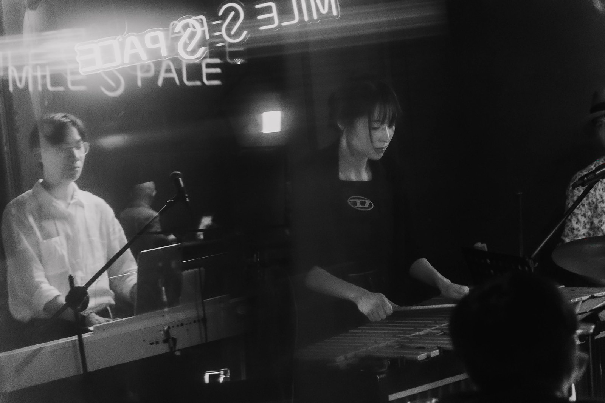
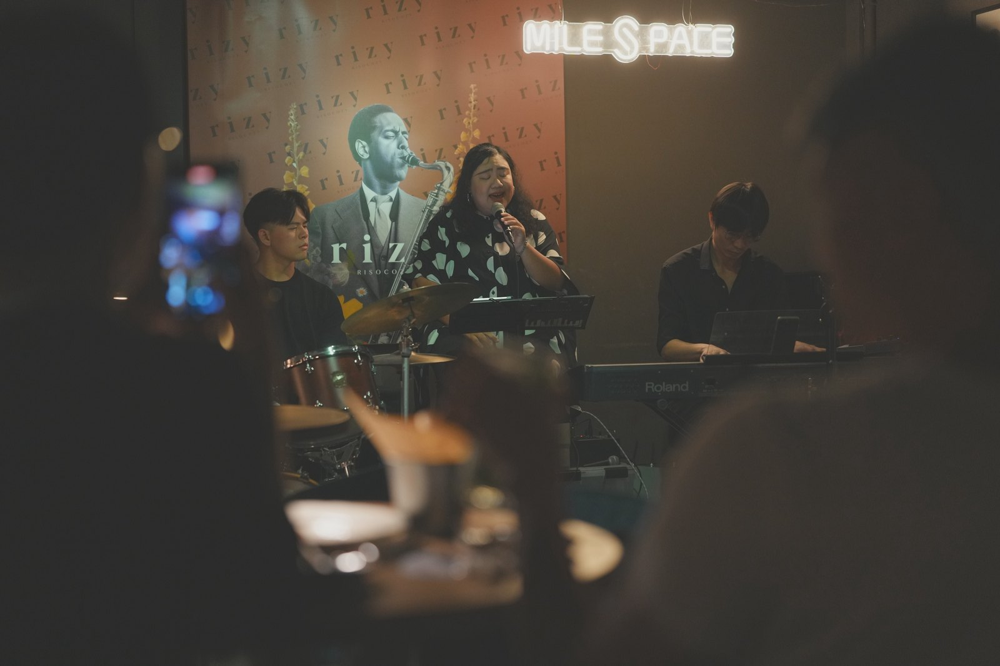
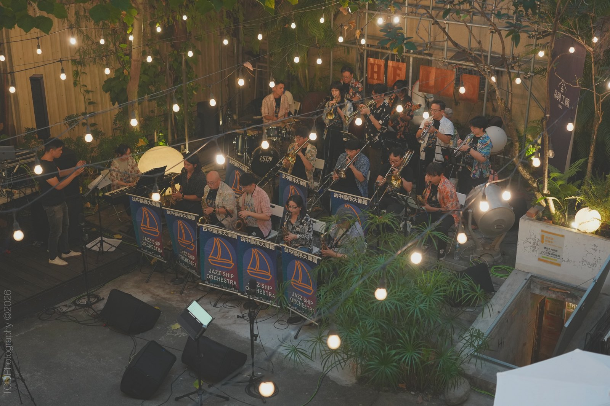
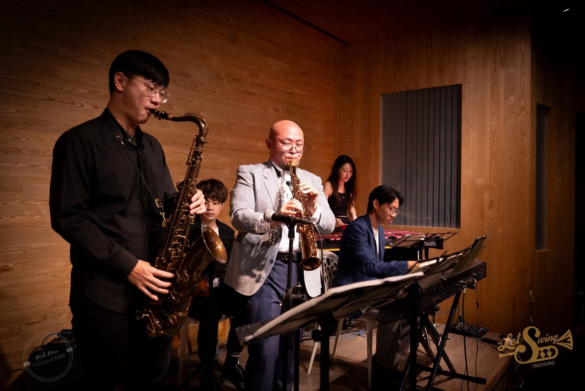
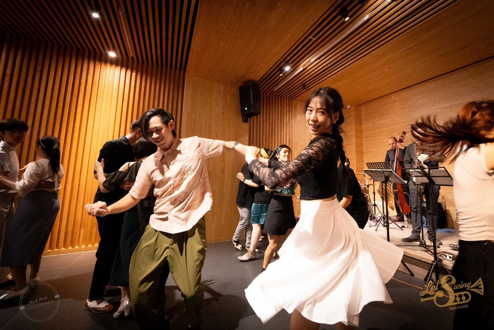
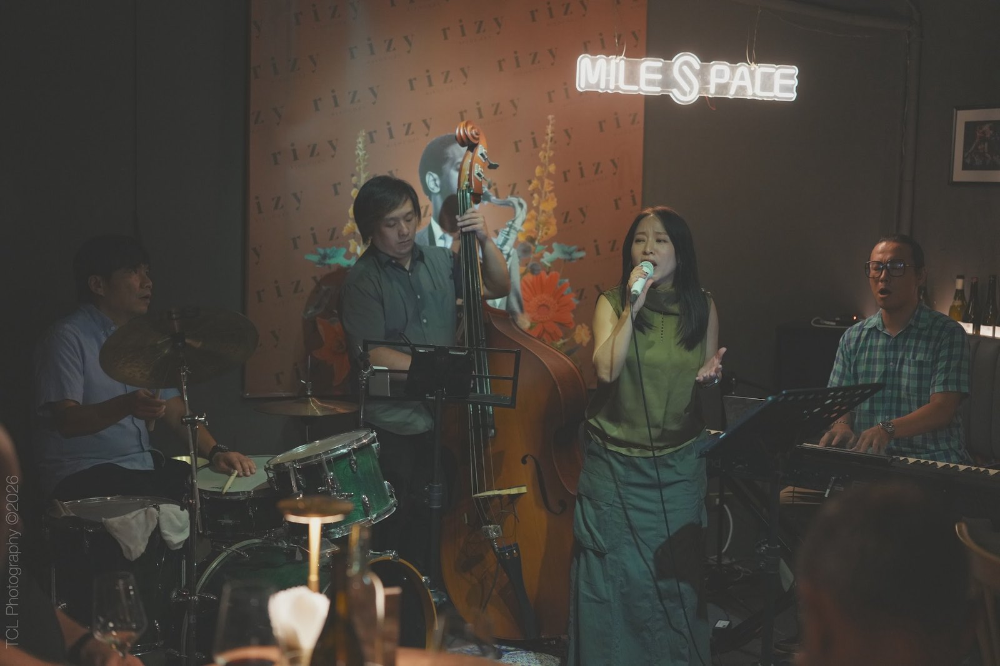
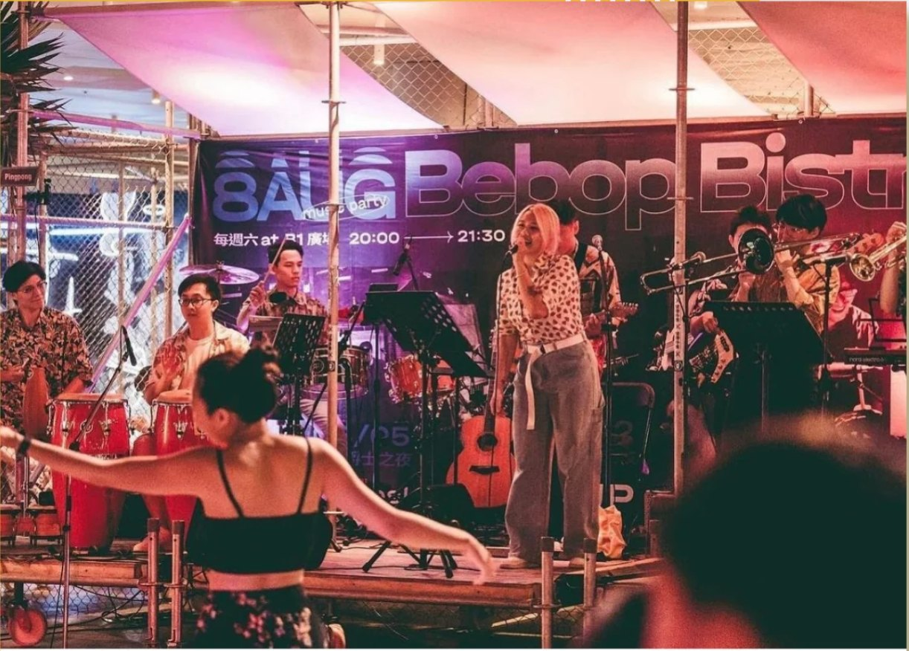
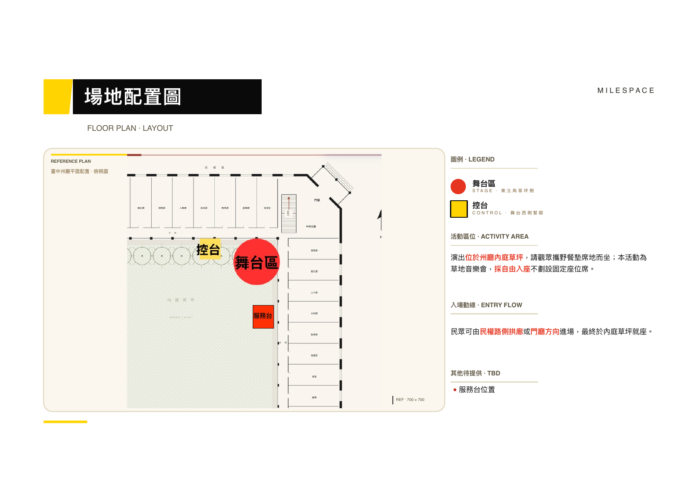

WEEKEND 01 / SESSION A
1/9 六
草地演出 · 下午 15:30 — 17:30
活動開場理念傳達主持開場引導，說明州廳重啟意義與草地音樂會理念。
Karpós Musica
中場休息與換場演出團隊交替、舞台設備微調。
Longfingers Quintet

前言 / ABOUT THIS EVENING
這一次，爵士不在門裡。它在冬日的草地上，和你一起曬著午後的太陽。
「臺中州廳草地爵士樂」從城市歷史場域的日常化出發，回望這座百年古蹟承載的記憶與文化層疊。這座融合巴洛克華麗與新古典優雅的建築，將暫時放下官署的距離感，讓展演視線延伸到外圍充滿綠意的草坪。
帶著野餐墊席地而坐，州廳不再只是被觀看的歷史建築，而是一座連結過去與未來的「城市客廳」。爵士樂奔放、即興、充滿律動的旋律，與古蹟的靜謐美學相互交織，讓午後的風也有了節拍。
活動資訊 / FOUR AFTERNOONS
2027 年一月，四場草地演出。每一場從州廳的歷史出發，走向爵士、放克、搖擺與拉丁的當代聲響。
草地演出 · 下午 15:30 — 17:30
草地演出 · 下午 15:30 — 17:30
草地演出 · 下午 15:30 — 17:30
草地演出 · 下午 14:30 — 17:30
本日 14:30 開始演出陣容 / LINEUP
從拉丁爵士與探戈、鋼琴與鐵琴五重奏，到大編制爵士、紐奧良銅管與搖擺舞。讓不同的聲響在同一片草地上相遇。
1/9 · 上半場

1/9 · 下半場

1/10 · 上半場

1/10 · 下半場

1/16 · 上半場

1/16 · 下半場

1/16 · 中場互動

1/17 · 14:30

1/17 · 15:30

1/17 · 16:40
企劃執行單位 / MILESPACE
我們相信爵士不只發生在舞台上，更應融入日常的每一個時刻。
從一杯飲品、一段旋律，到老建築裡的相遇——MileSpace 持續以現場音樂、空間策展與城市文化為核心，點亮地方的生命力。
每週在 Rizy 的固定演出，是我們為這座城市準備的微醺午後與夜晚。在這裡，音樂讓空間有了溫度，也讓靈魂彼此相連。
場地 / VENUE & FLOW
舞台在東北角草坪側，觀眾從民權路側拱廊或府廳方向進場，最後在內庭草坪自由入座。

演出位於州廳內庭草坪，採自由入座，不劃設固定座位席。
民眾可由民權路側拱廊或府廳方向進場。
一座百年古蹟，一個午後，讓歷史回到公共文化生活裡。
MILESPACE · AFTERNOON OF JAZZ · TAICHUNG
把百年州廳坐成城市客廳。
帶上野餐墊，讓爵代新聲在草地發生。